NeurIPS 2026
Time-Unconditional Flow Matching for Adaptive and Robust Robotic Control
*Equal contribution, order determined randomly · †Corresponding author
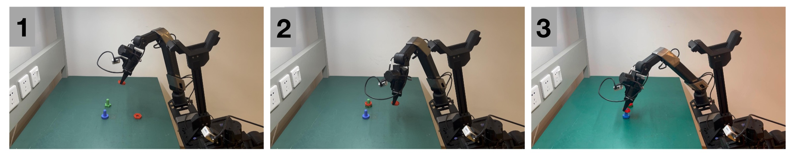
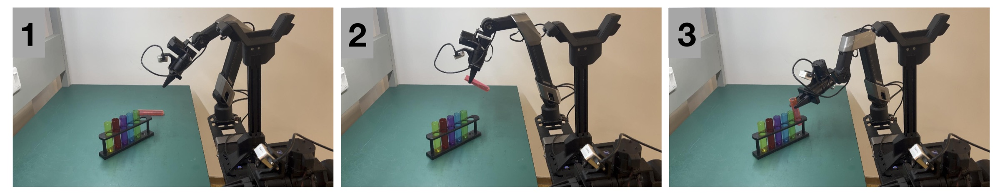
Instead of integrating a time-conditioned flow along a fixed schedule, GeCO learns a stationary velocity field over action sequences and optimizes until it converges. Easy states exit after a few steps and hard ones refine longer. The leftover field norm doubles as a free out-of-distribution detector.
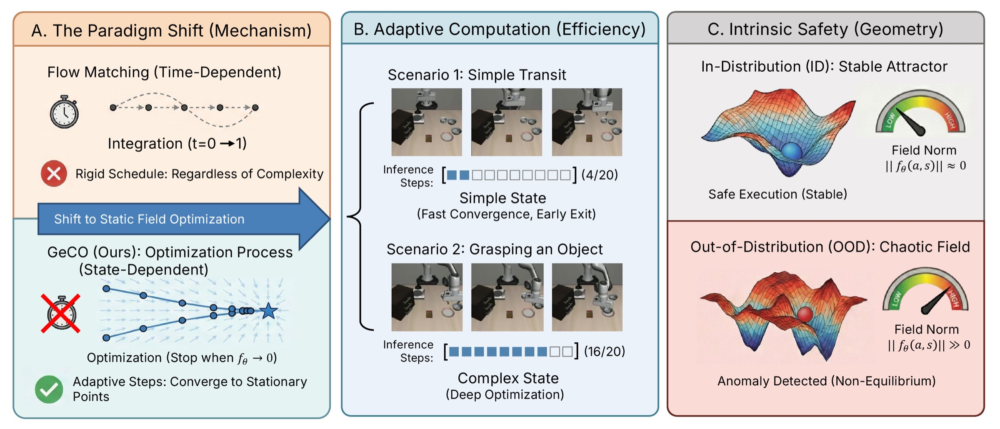
Diffusion and flow-based generators are increasingly used in robot policies to produce action chunks from visual observations, proprioception, and language instructions. However, closed-loop robot control requires solving action-generation problems of varying difficulty, whereas standard diffusion and flow-matching inference typically follows a fixed integration schedule. We introduce Generative Control as Optimization (GeCO), a time-unconditional framework that turns action synthesis from fixed-time integration into iterative optimization. GeCO learns a stationary velocity field over action sequences and refines actions until the field norm becomes small. This enables adaptive computation at each planning call: simple states can terminate early, while difficult states can use additional refinement. The same field norm also provides a lightweight signal for non-convergent action generation under distribution shift. GeCO can be instantiated in both diffusion-transformer policies and flow-matching Vision-Language-Action (VLA) systems without changing the surrounding policy interface. Across simulation benchmarks and real-world tasks, GeCO matches or improves task performance while enabling convergence-based inference as a plug-and-play replacement for standard time-conditioned action generators.
Method
Interpolate \(x_\gamma = \gamma a + (1-\gamma)\varepsilon\) but never give \(\gamma\) to the model. Regress the velocity-rescaled target \(g^\star = (\varepsilon - a)\,c(\gamma)\), where \(c(1)=0\), so the field vanishes on demonstrations.
At each planning call, descend the field from a prior sample. Exit early once the field norm falls below \(\tau_{\text{opt}}\), or stop at \(K_{\max}\). Execute the first \(H\) actions and replan (receding horizon).
In-distribution states converge to \(\|f_\theta\|\approx 0\). Anomalous states stay high. \(\mathrm{Score}(o_t) = \|f_\theta(\hat a_t, z_t)\|\) flags OOD with essentially no overhead.
Real-World Deployment
We swap the flow-matching action head of Galaxea G0 Plus for GeCO and fine-tune both on the same teleoperated demonstrations with the same training budget. We evaluate two contact-rich tasks over 20 physical trials each, with object positions randomized.
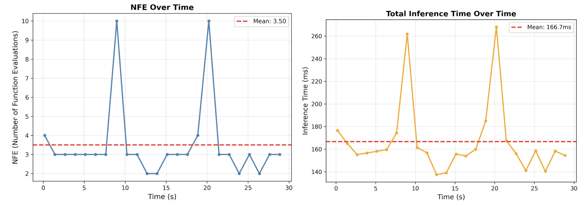
Per-call NFE spikes to 9–10 during alignment and threading, then drops to 2–3 in free-space transit (mean 3.50 NFE, 166.7 ms).
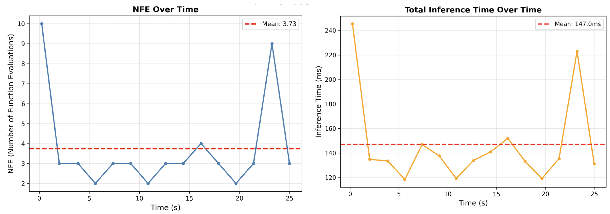
The episode starts with deep refinement (NFE 10) to lock onto the tube, then early-exits for most of the motion (mean 3.73 NFE, 147.0 ms).
Adaptive Computation
Each line is one planned action chunk along a rollout, colored by the number of function evaluations GeCO needed to converge at that state. Free-space transit converges almost immediately. Effort concentrates at bottlenecks such as pre-grasp alignment and placement, and at the episode start when the policy must ground the instruction among distractors.
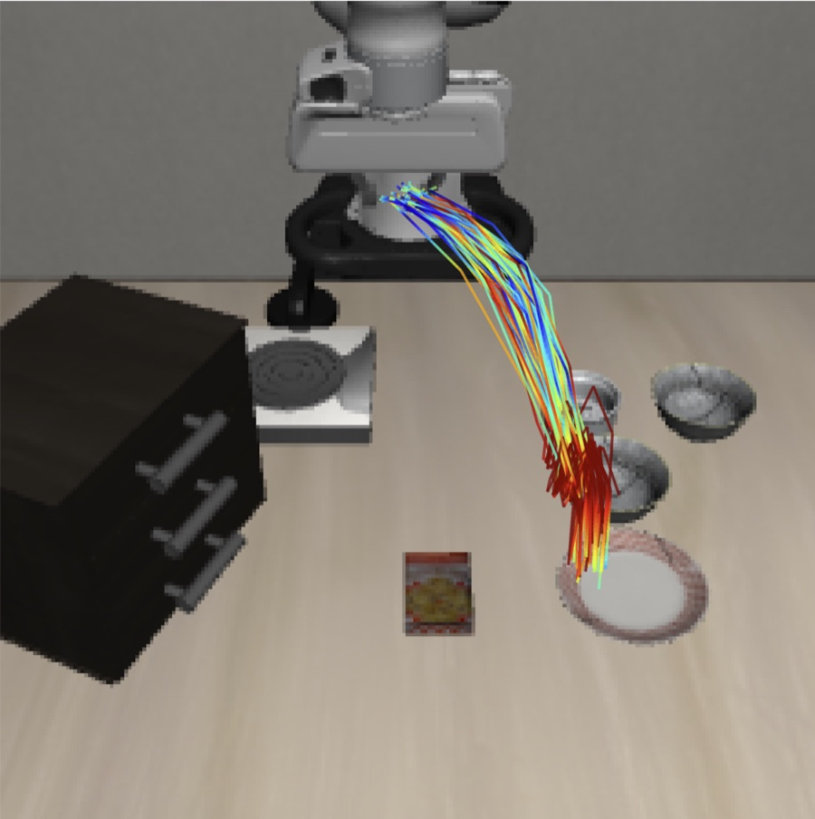
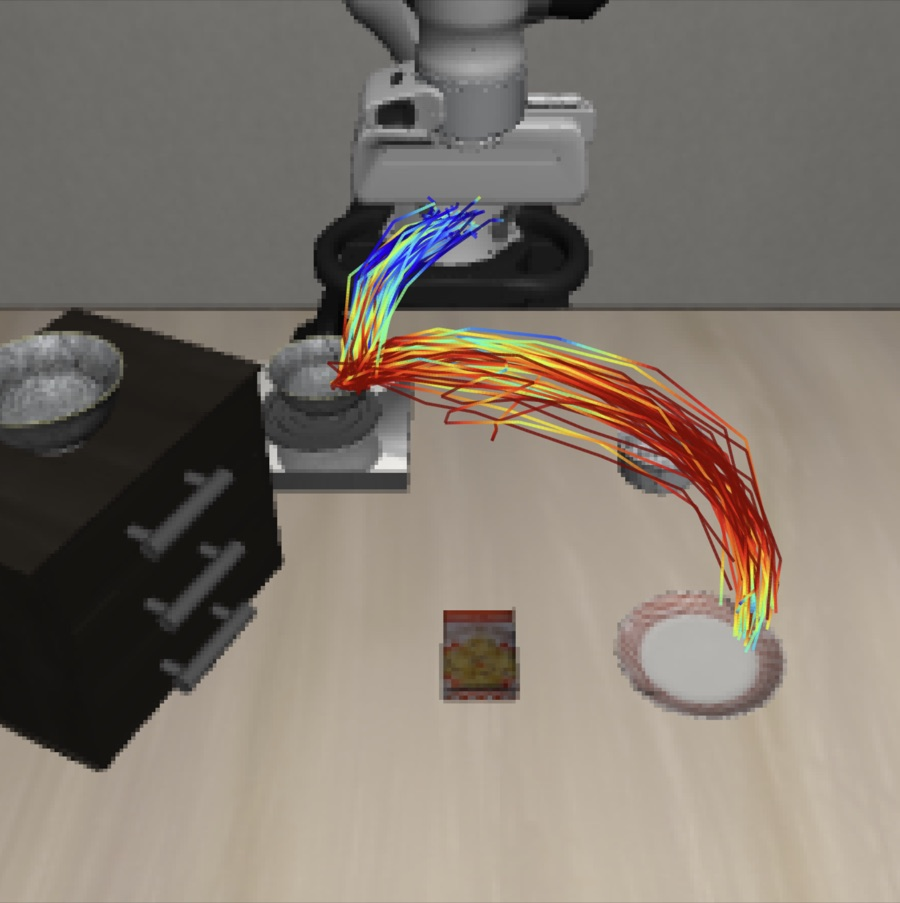
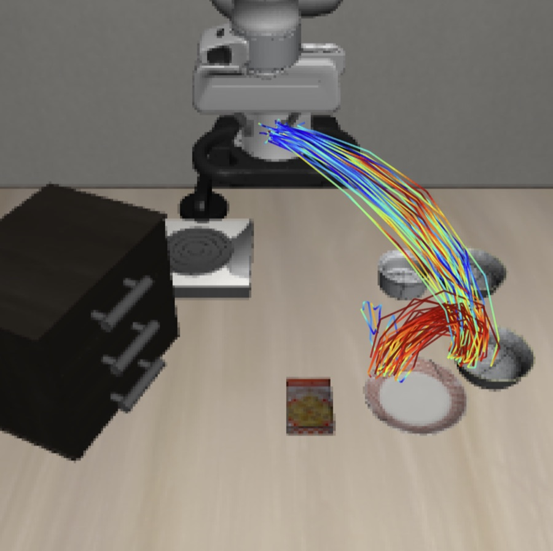
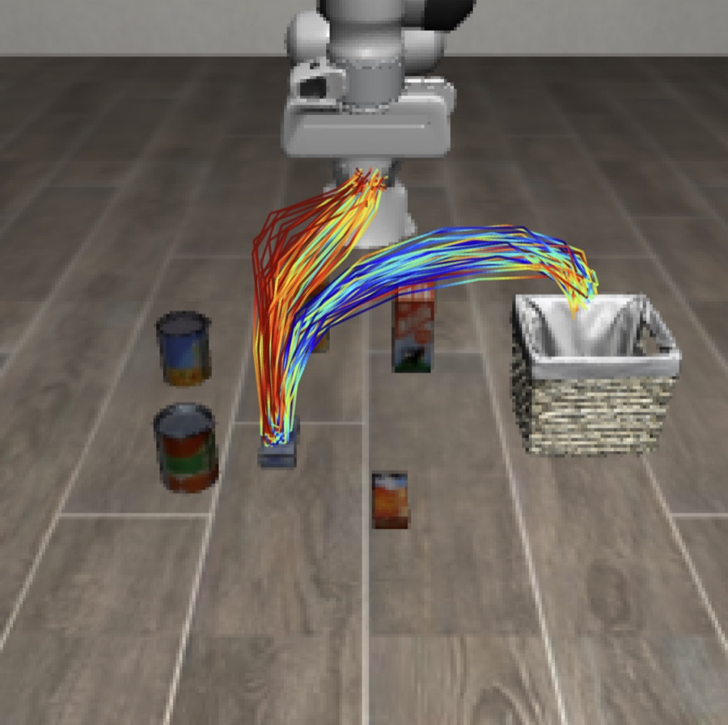
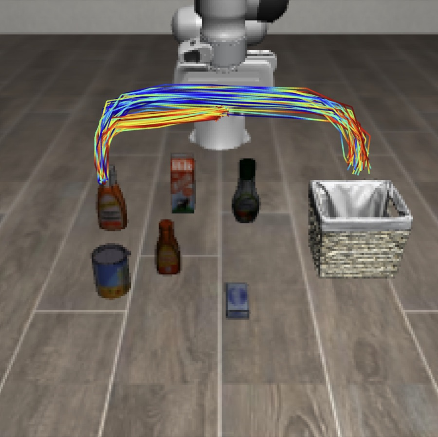
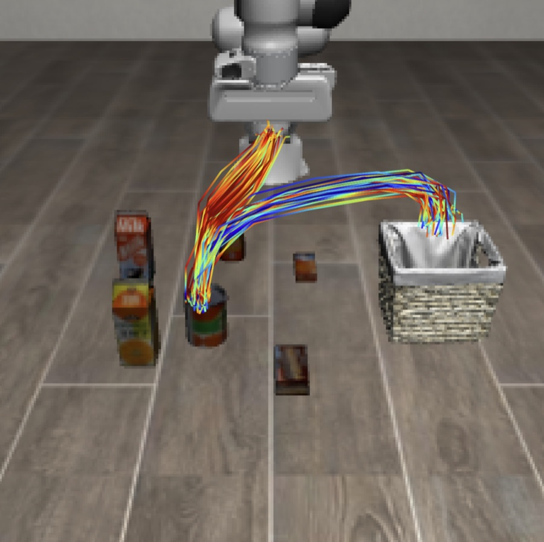
Simulation Benchmarks
With a budget of only 5 steps, GeCO already beats 20-step Rectified Flow (91.9% vs. 90.0%) using 75% less compute. Its peak of 93.5% uses only 11.6 NFE on average.
| Method | Max steps | Goal | Spatial | Object | Long | Avg. | NFE ↓ |
|---|---|---|---|---|---|---|---|
| Diffusion Policy | 100 | 82.9 | 91.4 | 88.9 | 82.7 | 86.5 | 100.0 |
| Rectified Flow | 20 | 92.4 | 94.6 | 97.0 | 76.0 | 90.0 | 20.0 |
| GeCO | 5 | 91.6 | 95.4 | 98.2 | 82.4 | 91.9 | 5.0 |
| GeCO | 10 | 93.0 | 95.8 | 99.0 | 81.8 | 92.4 | 8.7 |
| GeCO | 20 | 95.2 | 95.8 | 99.0 | 83.8 | 93.5 | 11.6 |
| GeCO | 30 | 93.6 | 95.2 | 98.8 | 84.8 | 93.1 | 12.8 |
Bimanual manipulation. Hard adds clutter, texture, lighting, and table-height randomization. GeCO raises the π0 Hard average from 18% to 28%.
| Method | Adjust Bottle | Beat Block Hammer | Blocks Ranking | Click Alarmclock | Click Bell | Avg. | ||||||
|---|---|---|---|---|---|---|---|---|---|---|---|---|
| Easy | Hard | Easy | Hard | Easy | Hard | Easy | Hard | Easy | Hard | Easy | Hard | |
| ACT | 97 | 23 | 56 | 3 | 0 | 0 | 32 | 4 | 58 | 3 | 49 | 7 |
| π0 | 90 | 56 | 43 | 21 | 7 | 1 | 63 | 11 | 44 | 3 | 49 | 18 |
| π0 + GeCO | 86 | 66 | 52 | 36 | 0 | 0 | 72 | 16 | 42 | 21 | 50 | 28 |
Long-horizon, language-conditioned manipulation. The largest gains are on Track 1 (in-distribution skills) and Track 6 (unseen textures and visual variation).
| Method | Track 1 | Track 2 | Track 3 | Track 4 | Track 6 | Avg. |
|---|---|---|---|---|---|---|
| π0 | 47.0 | 21.2 | 29.1 | 17.3 | 32.2 | 29.4 |
| π0.5 | 40.6 | 22.6 | 18.0 | 16.1 | 25.6 | 24.5 |
| π0 + GeCO | 61.0 | 22.0 | 34.0 | 20.0 | 45.0 | 36.4 |
Intrinsic Safety
We train on LIBERO-Goal and deploy on LIBERO-Spatial, an unseen workspace layout. The final field norm of each planning call serves as the anomaly score. When a lightweight leaky-bucket filter triggers, the episode is stopped before the robot wastes time on a doomed execution.
The baseline, Diff-DAgger's flow-matching loss signal, is close to chance. GeCO separates ID from OOD almost perfectly and needs no extra network, ensemble, or timestep sampling.
GeCO (Leaky Bucket) at TNR 90.5%. Diff-DAgger (Moving Avg) TNR is 27.8%.
@article{zhang2026generative,
title={Generative Control as Optimization: Time Unconditional Flow Matching for Adaptive and Robust Robotic Control},
author={Zhang, Zunzhe and Huang, Runhan and Liu, Yicheng and Zhu, Shaoting and Mou, Linzhan and Zhao, Hang},
journal={arXiv preprint arXiv:2603.17834},
year={2026}
}